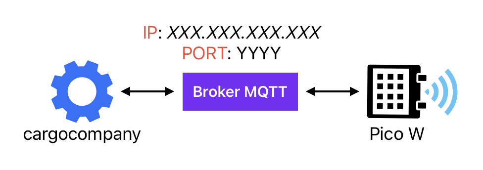
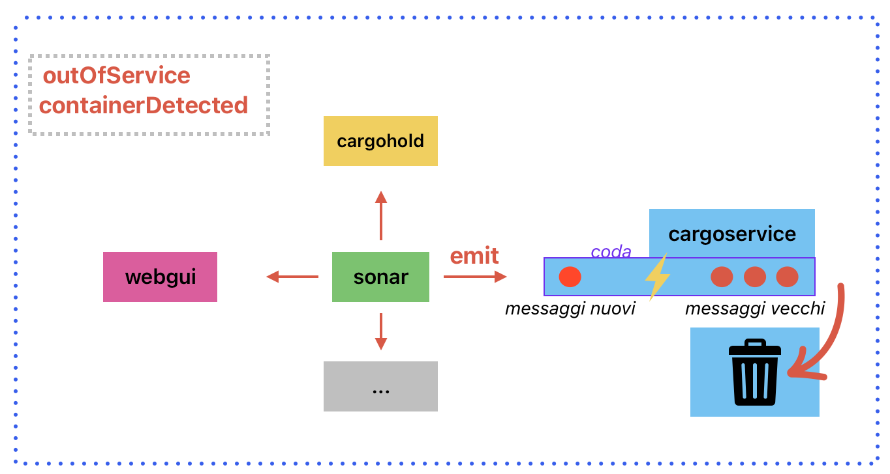

Introduction
GOAL:
- Analizzare e sviluppare i componenti relativi al Raspberry Pico W
Requirements
 • The sensor associated to the IOPort is a device (a sonar) used to detect the presence of a container, when it measures a
distance D, such that D < DFREE/2, during a reasonable time (e.g. 3 secs).
• cargoservice sends the answer retrylater, if the IOPort is currently occupied by a container or if the system is Out of service
• Otherwise, it considers the system as engaged, detects a free slot and returns as answer the name of such a reserved slot.
While engaged, the system must blink a Led.
When the request to load is accepted, the customer must move the container in the sensor area within prefixed amount of time (e.g. 30
secs), otherwise the systems becomes disengaged. Then, the cargoservice uses the cargorobot to move the container from the
IOPort to the slot5 (for marking the container) and then to the reserved slot.
The service must also show on the display on the IOPort:
• the message 'Out of service' if the sonar sensor measures a distance D > DFREE for at least 3 secs
(perhaps a failure of the sonar).
• The sensor associated to the IOPort is a device (a sonar) used to detect the presence of a container, when it measures a
distance D, such that D < DFREE/2, during a reasonable time (e.g. 3 secs).
• cargoservice sends the answer retrylater, if the IOPort is currently occupied by a container or if the system is Out of service
• Otherwise, it considers the system as engaged, detects a free slot and returns as answer the name of such a reserved slot.
While engaged, the system must blink a Led.
When the request to load is accepted, the customer must move the container in the sensor area within prefixed amount of time (e.g. 30
secs), otherwise the systems becomes disengaged. Then, the cargoservice uses the cargorobot to move the container from the
IOPort to the slot5 (for marking the container) and then to the reserved slot.
The service must also show on the display on the IOPort:
• the message 'Out of service' if the sonar sensor measures a distance D > DFREE for at least 3 secs
(perhaps a failure of the sonar).
Requirement Analysis
A partire da quanto svolto nello Sprint1, ci concentriamo sui seguenti requisiti:
• Studio e sviluppo del software relativo al Raspberry Pico W.
• Studio del macro-componente sonar e della logica relativa alle misurazioni effettuate dal dispositivo fisico.
• Studio del macro-componente led e della logica relativa all'accensione e allo spegnimento del led fisico.
Problem Analysis
MQTT:
• Data la natura distribuita del nostro sistema occorre decidere come i nodi debbano scambiarsi informazioni, perché la scelta del protocollo ha conseguenze sull’architettura,
sulla complessità del codice e sull’affidabilità della comunicazione. Le opzioni possibili sono diverse: socket TCP o UDP diretti, HTTP, CoAP, WebSocket oppure MQTT.
• Il protocollo MQTT si adatta alle nostre esigenze:
1. Il protocollo è leggero e pensato per dispositivi con poche risorse: il Pico W ha il Wi-Fi integrato e in MicroPython basta la libreria umqtt.simple per pubblicare
e ricevere messaggi con poche righe di codice.
2. Il modello publish/subscribe si adatta bene alla natura del problema: il sonar produce un flusso di misurazioni asincrone e il led riceve comandi occasionali,
quindi il sensore pubblica su un topic senza sapere chi lo ascolta, e il broker si occupa di consegnare i messaggi a tutti gli attori interessati.
3. Il sistema QAK supporta MQTT in modo nativo e vede il Pico W solo come una sorgente di eventi su un topic senza il bisogno di conoscere
indirizzo IP e PORTA del dispositivo (viceversa per il Pico W).

Software del Pico W:
• Il codice in esecuzione sul Raspberry Pico W dovrà connettersi al Wi-Fi e al broker MQTT e svolgere due compiti in parallelo:
1. Comunire le distanze rilevate.
2. Ricevere lo stato del led associato e gestire il suo funzionamento.
• Per integrarsi con il sistema, il software sviluppato prevede che i messaggi pubblicati dal Pico W usino lo stesso formato dei messaggi QAK.
// Esempio di riferimento:
msg(sonarDistance,event,pico,none,distance(D),N)
In questo modo il runtime QAK riconosce direttamente la misura come l’evento sonarDistance, senza conversioni intermedie.
• L'unità di misura di riferimento sono i centimetri.
Dettaglio messaggi:
• cargoservice ↔ sonar
Event containerDetected : containerDetected(NOARGS)
Event outOfService : outOfService(NOARGS)
• cargoservice ↔ led
Dispatch ledState : ledState(STATE)
Messaggi attesi:
- ledState: "on", "off"
Coda dei messaggi:
• Gli eventi emessi dal sonar non sono stati, ma segnalazioni che il runtime QAK accoda per ogni attore.
Se cargoservice sta svolgendo altre attività, gli eventi emessi restano nella coda associata.
• Quando arriva una richiesta di carico, questi eventi potrebbero descrivere una situazione ormai superata.
Per evitarlo dobbiamo aggiungere a cargoservice un nuovo stato che consuma e scarta gli eventi accumulati e si concentra su quelli successivi alla richiesta di carico.

Test plans
• Vengono definiti test che permettono di esplicitare il comportamento atteso di cargoservice in relazione ai messaggi.
Di seguito vengono presentati degli esempi esemplificativi:
@Test
public void testRequestToLoadAccepted() throws Exception {
String req = CommUtils.buildRequest(
"mock",
"requestToLoad",
"requestToLoad(NOARGS)",
"cargoservice"
).toString();
System.out.println("Richiesta: " + req);
String response = conn.request(req);
System.out.println("Risposta: " + response);
assertTrue("La risposta deve contenere slot",
response.contains("slot"));
assertFalse("La richiesta non dovrebbe essere rifiutata",
response.contains("rejected"));
}
@Test
public void testRequestToLoadRejected() throws Exception {
String req = CommUtils.buildRequest(
"mock",
"requestToLoad",
"requestToLoad(NOARGS)",
"cargoservice"
).toString();
System.out.println("Richiesta: " + req);
String response = conn.request(req);
System.out.println("Risposta: " + response);
assertTrue("La risposta deve essere rifiutata",
response.contains("rejected"));
assertFalse("La richiesta non dovrebbe specificare uno slot",
response.contains("slot"));
}
Project
cargoHold-1.0.jar
• Sulla base delle interfacce individuate nello Sprint0, in relazione ai componenti non-attivi,
viene prodotta una libreria contente l'insieme delle classi POJO: cargoHold-1.0.jar.
• Position
• Slot
• Hold
• Il servizio cargohold usa cargoHold-1.0.jar.
Attualmente non si ritiene necessario il salvataggio dello stato del sistema su un file esterno.
Lo stato verrà mantenuto finchè il servizio rimarrà attivo sul nodo.
Stati del servizio cargohold:
 • MARCO-STATO: WAITREQ
• MARCO-STATO: WAITREQ
| Stato |
Descrizione |
| waitingRequest |
In attesa di richieste per la gestione della stiva. |
•
MARCO-STATO: HANDLESTATE
| Stato |
Descrizione |
| handleRequestSlot |
Verifica la presenza di uno slot libero. |
| handleSetSlot |
Cambia lo stato di uno slot. |
| handleRequestPosition |
Ritorna la posizione di un elemento del sistema. |
Stati del servizio cargoservice:
 • MARCO-STATO: INIT
• MARCO-STATO: INIT
| Stato |
Descrizione |
| initAskIOPort |
Stato iniziale del sistema. Richiede a cargohold le coordinate dell'IOPort. |
| initAskSlot5 |
Salva le coordinate dell'IOPort. Richiede a cargohold le coordinate dello Slot5. |
| initAskHome |
Salva le coordinate dello Slot5. Richiede a cargohold le coordinate della Home. |
| initComplete |
Salva le coordinate della Home. Termina la fase di INIT. |
| initError |
Gestisce eventuali errori durante l’inizializzazione del sistema, per i quali è necessario procedere al riavvio. |
•
MARCO-STATO: DISENGAGED
| Stato |
Descrizione |
| disengaged |
Stato in cui il sistema rimane in attesa di nuove richieste di carico. |
•
MARCO-STATO: LOAD
| Stato |
Descrizione |
| handleLoad |
Gestisce una richiesta di carico. Richiede a cargohold se è presente uno slot libero. |
| confirmLoadToClient |
Se lo slot è stato riservarto, comunica lo slotId alla webgui. |
| handleLoadFailed |
Se non sono presenti slot liberi, comunica 'retrylater' alla webgui. |
| askSlotPosition |
Richiede a cargohold le coordinate dello slot riservato. |
| saveSlotPosition |
Salva le coordinate dello slot riservarto. |
•
MARCO-STATO: WAITCONTAINER
| Stato |
Descrizione |
| waitForContainer |
Attende (max 30 sec.) che il sonar rilevi la presenza di un container nella zona di carico IOPort. |
| handleTimeOut |
Lo slot precedentemente assegnato torna libero. |
•
MARCO-STATO: ENGAGED
| Stato |
Descrizione |
| moveToIOPort |
Il DDR viene comandato fino all'IOPOrt. |
| moveSlot5 |
Il DDR viene comandato fino allo Slot5. |
| markContainer |
Il DDR attende la marcatura del container. |
| moveToFinalSlot |
Il DDR viene comandato fino allo slot riservato. |
| finalizeStorage |
Se tutto è andato a buon fine, cargoservice chiede a cargohold di impostare lo stato dello slot come occupato. |
| returnToHome |
Il DDR ritorna alla Home. |
| finishOperation |
Il DDR ha finito di svolgere il suo ciclo di operazioni ed è tornato con successo alla Home. |
| handlePreDeliveryFailure |
Gestisce errori di movimento legati ad alcuni stati (come da immagine). |
| handlePostDeliveryFailure |
Gestisce errori di movimento legati ad alcuni stati (come da immagine). |
Modello:
• Qak eseguibile del sistema.
Testing
Piani di test sviluppati:
• Codice test cargohold
• Codice test cargoservice